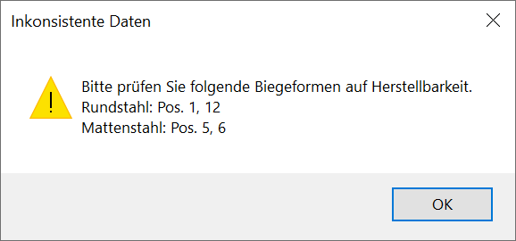
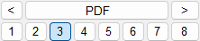

")

Erzeugen von Stahllisten (Einzellisten oder Gesamtliste) für eine oder mehrere Bewehrungszeichnungen. (Abfrage [Bitte rechts auswählen]).
Die Gesamtstahlliste beinhaltet eine Gewichtsliste, eine Gesamtliste sowie die Einzellisten für Rundstahl, Matten, U-Körbe und mechanische Verbindungen.
Prüfung auf Datenkonsistenz Bei Aufruf der Stahlliste wird geprüft, ob die Teillängeninformationen an den Auszugsformen auf dem Plan mit den wahren Teillängen übereinstimmen. Wenn Teillängentexte nachträglich bearbeitet worden sind, ist das nicht der Fall, und Sie erhalten eine Meldung mit einem Hinweis auf die entsprechenden Positionen. Korrigieren Sie die Informationen auf dem Plan, bevor Sie die Stahlliste erzeugen. Nutzen Sie für weitere Hinweise den Dialog für Bewehrungsinformationen [Formst/Formma | BiForm | Info].  |
Funktionen |
Beschreibung |
||||||||
|---|---|---|---|---|---|---|---|---|---|
Erzeugen einer Stahlliste aus einer oder mehreren Zeichnungen. Die Stahlliste kann gedruckt oder auf der Zeichenfläche abgelegt werden. |
|||||||||
Erzeugen einer Stahlliste für ausgewählte Positionen. |
|||||||||
|
Ausgeben der auf der Zeichnung vorhanden Stahlliste. Die Stahlliste kann ausgedruckt oder im PDF-Format gespeichert werden. Für das Ablegen der Stahlliste auf der Zeichnung, siehe Funktion Neu erzeugen. |
||||||||
Gestalten einer Vorlage für die Ausgabe. |
|||||||||
Kontrollieren der Stückzahl. |
|||||||||
|
Anpassen der Plotfläche beim Ablegen der Stahlliste auf der Zeichnung. |
||||||||
|
|
Direktausgabe der Stahlliste:
Auswahl des Stahllistenprofils:  Stahllistenprofile können unter [Neu erzeugen | Allgemein (Unterdialog)] angelegt werden. |
.png "Stahlliste ausgeben")


Optionen |
Beschreibung |
|---|---|
|
Nur bei [Teilliste] verfügbar. Selekt: Auswahl von Positionen über Einzel- oder Rahmenauswahl. Eingab: Auswahl von Positionen über die Eingabe der Positionsnummer. Die Eingaben unterscheiden Rundstahl- und Mattenpositionen. Verleg: Auswahl von Positionen über Einzel- oder Rahmenauswahl von Verlegungen oder Positionierungen. |
|
Elemente hinzufügen / entfernen. |
|
Auswahlrahmen rechteckig / polygonal / einzelne Elemente auswählen. |
|
Zuletzt markiertes erneut markieren / automatische Elementauswahl. |


Siehe auch: